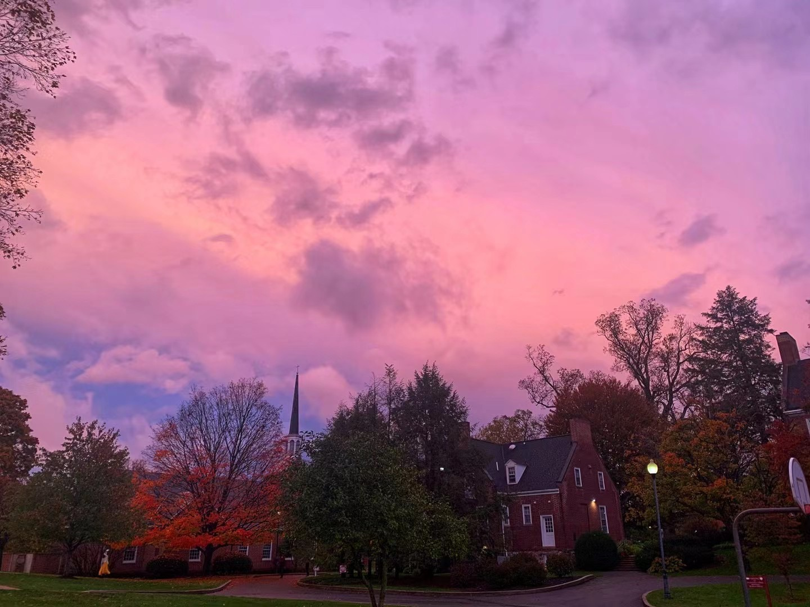
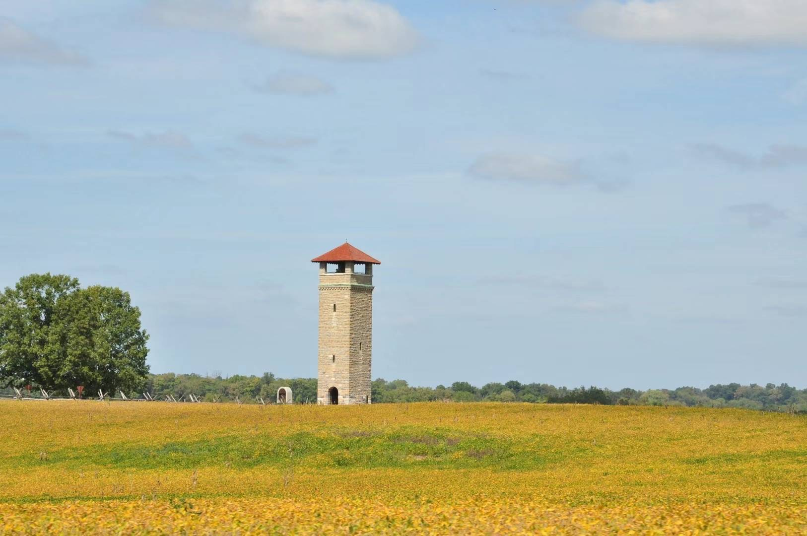

A Well
A moon in the well,
Full and bright, reflects the sky.
I see it in me.
{kind=link}
A Poem for Misery
I wrote a poem for misery
Sung by the stars, but nobody heard
To praise the forgotten story.
Rivers were on fire and prairies were blown away.
The earth silenced and couldn’t say a word.
I wrote a poem for misery.
The sky above heads was dull and gray.
But the olive branch was carried by birds
To praise the forgotten story.
The gilded Buddha is wooden they say
Yet as soft as winds chasing the herd.
I wrote a poem for misery.
I once wished for a sunny day.
But why were my eyes in tears blurred——
To praise the forgotten story.
The pain in stories never passed away.
While memories faded, I look backward.
I wrote a poem for misery
To praise the forgotten story.

{kind=link}
A Purple Sky
It’s a purple day
Shine on the speeding highway.
Send the glare away
Sleep under the moonlight of May.
It’s a purple day
Blues, beer cans, and a romance story.
Soap opera and drowsiness make somebody stay
Dream about a dream with an X lover on the bay
It’s a purple day
Dark night, white dreams, and countless past stories.
No, maybe I shouldn’t call it a purple day.
On a starless way.
{kind=link}

{kind=link}
The Sky Is a Big Hole
The sky has a big hole poked by a bird,
Huffing and puffing in the wet wind.
The green carriage lurches over the hill.
In the moment of weightlessness, I jump into the world.
The mountain has a big hole poked by a horse,
Racing and tearing through the stifling fog.
Carnival drums and balloons ignore me.
In the moment of disappearance, I sleep in the hills.
Summer has a big hole poked by the rain,
Absorbing and sucking the green of the universe.
Drops of water join to form rivers.
In the moment the drops fall, I escape from the world.
The world has become a big hole,
Stuffed with bright red and oily green ink.
The meandering streams lagging and dragging their tails.
In the moment of drying, I break the flow.
{kind=link}
Her Death
She walked through a lush valley on a mid-March day.
Azalea woke when her skirt flare brushed the green limb.
Raindrops fell, and the wind carried grass seeds away.
The universe bloomed, singing a sweet old hymn.
It all changed when a few mud dots dropped
From her hand to the ground, growing and being enlightened.
They marched; they conquered; They pressed down the universe to be bowed.
They buried her in the new world as if it was brightened.
The king of nature! His voice is carried by billowing smoke.
His vehicle shackles wild horses and strangles wandering whales.
He kidnaps beauty and takes pride in putting her in yoke.
His ignorance is the opening anthem of a decade of assail.
Help, help! Now he whimpers in the fires and storms.
The king of nature! In the silence of new world, nobody mourns.